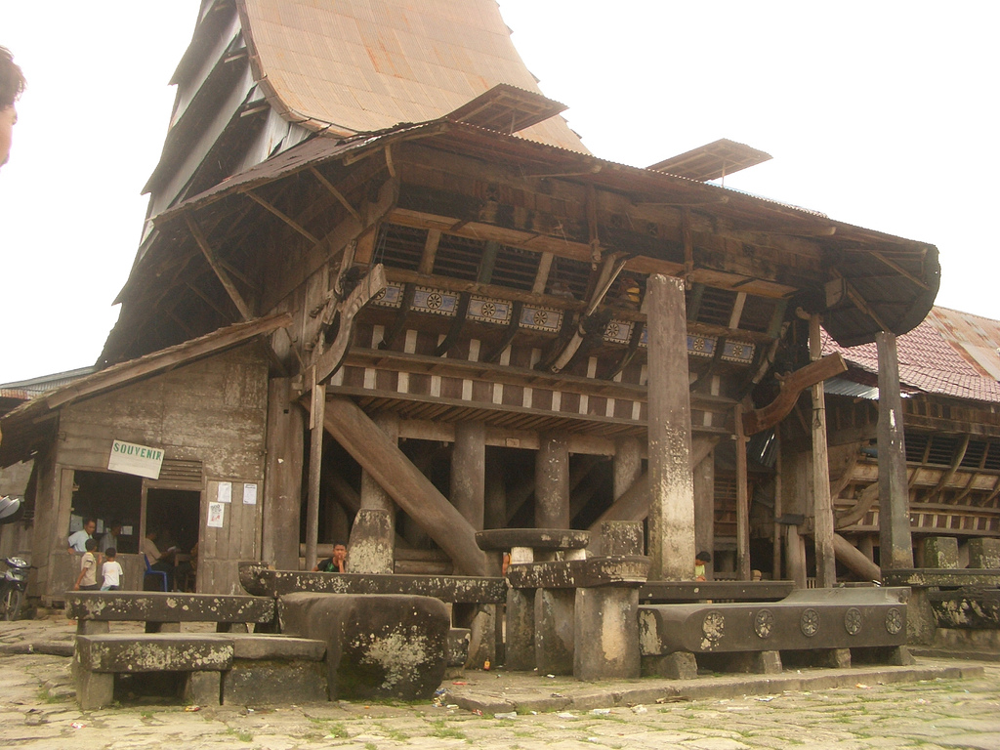
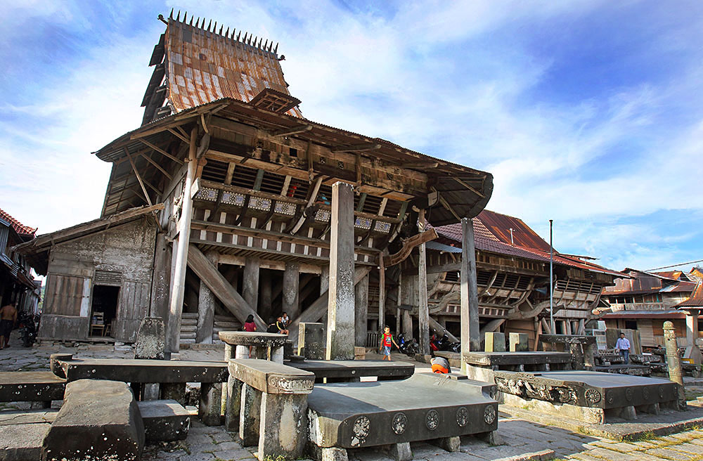

Omo Sebua adalah rumah adat dari Pulau Nias, Sumatera Utara, yang terkenal dengan kekuatannya serta desain yang unik dan megah. Rumah ini dibangun sebagai tempat tinggal para kepala suku atau pemimpin adat, menunjukkan status sosial yang tinggi dan kekuasaan dalam komunitas. Secara arsitektural, Omo Sebua dirancang untuk tahan terhadap gempa dan serangan musuh, mencerminkan kepiawaian masyarakat Nias dalam seni bangunan tradisional.
|  |  |
Bentuk Omo Sebua sangat khas, dengan atap curam berbentuk segitiga yang menjulang tinggi. Atap ini terbuat dari bahan alami seperti rumbia atau ijuk, memberikan perlindungan yang efektif dari cuaca ekstrem. Rumah ini berdiri di atas tiang-tiang kayu yang tinggi, terkadang mencapai beberapa meter di atas tanah, memberikan perlindungan tambahan dari banjir dan serangan musuh. Dinding-dinding Omo Sebua dibuat dari kayu keras yang disusun tanpa menggunakan paku, melainkan menggunakan sistem sambungan yang rumit untuk memberikan stabilitas struktural yang luar biasa.
Secara sejarah, Omo Sebua telah ada selama ratusan tahun, menjadi simbol keunggulan arsitektur dan budaya Nias. Rumah ini tidak hanya berfungsi sebagai tempat tinggal, tetapi juga sebagai benteng pertahanan dan pusat kehidupan sosial. Kemampuan Omo Sebua untuk bertahan dari gempa bumi yang sering melanda Pulau Nias menunjukkan kejeniusan teknik bangunan tradisional masyarakat setempat. Hingga kini, meskipun jumlahnya semakin berkurang akibat modernisasi, Omo Sebua tetap menjadi kebanggaan budaya dan simbol identitas masyarakat Nias.
Ciri khas lain dari Omo Sebua adalah pintu masuknya yang kecil dan sempit, yang dirancang agar sulit diakses oleh musuh. Ruangan di dalam rumah ini luas tanpa sekat, dengan lantai kayu yang kokoh. Ruangan ini digunakan untuk berbagai aktivitas, mulai dari tempat tinggal hingga ruang pertemuan dan upacara adat. Desain interior yang sederhana namun fungsional ini mencerminkan kehidupan masyarakat Nias yang kolektif dan terfokus pada kebersamaan.